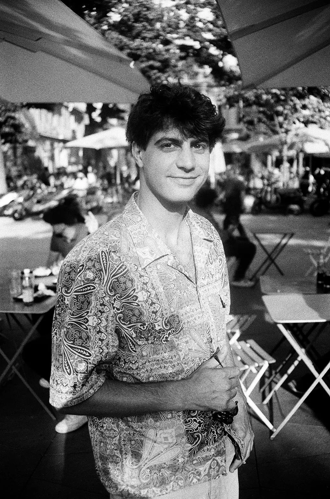
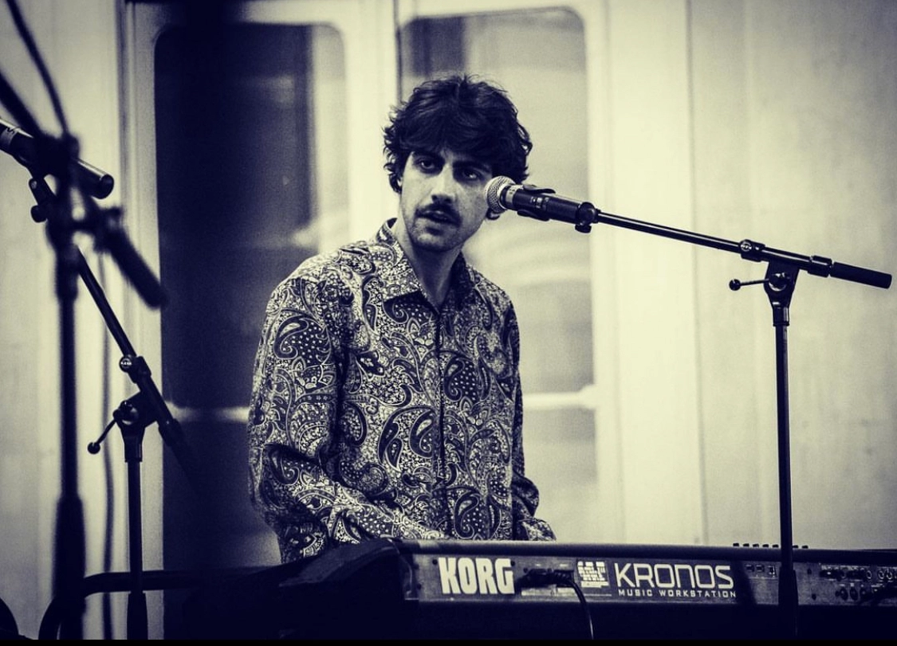

[Marseille · 2024]J'écris de la musique depuis des années mais je suis pianiste avant tout. J'ai joué dans des styles très variés : rock, folk, reggae, rap. J'ai composé pour orchestre symphonique et passé beaucoup d'heures en studio, de l'enregistrement au mixage. Bref, j'aime les boutons, j'aime le son, j'aime les claviers.
Sur scène avec des groupes live, en studio pour la musique à l'image. Aujourd'hui je compose un album de rock progressif.